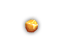
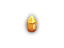
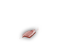

| Name | UnID'd name | Weight | Effect | Value | Made of | Tile |
|---|---|---|---|---|---|---|
| crystal of darkness | brown gem | 1s | used, darkens area around PC | low | crystal |
|
| crystal of fire | red gem | 1s | used, fireball, 6d6 damage if thrown or used with sling | average | ||
| crystal of health | blue gem | 1s | used, restores 12d12/6d6/3d3 HP | average | ||
| crystal of knowledge | green gem | 1s | used, magic maps; if blessed, +1d2 Le [3] | low |
| |
| crystal of light | white gem | 1s | used, lights area around PC | low |
| |
| crystal of power | red gem | 1s | used, restores PP: +6d16/+3d8/-4d12 PP [2] | low | ||
| amber | brown gem | 1s | &nbs p; | average | crystal |  |
| blue/green aquamarine | blue gem/green gem | 1s | above average |
| ||
| emerald | green gem | 1s | high |
| ||
| opal | white gem | 1s | average |
| ||
| ruby | red gem | 1s | very high |
| ||
| sapphire | blue gem | 1s | very high |
| ||
| topaz | brown gem | 1s | average |  | ||
| blue/green turquoise | blue gem/green gem | 1s | high |
| ||
| worthless piece of blue glass | blue gem | 1s | very low | glass | ||
| worthless piece of brown glass | brown gem | 1s |  | |||
| worthless piece of green glass | green gem | 1s | ||||
| worthless piece of red glass | red gem | 1s | ||||
| worthless piece of white glass | white gem | 1s |
| |||
| gold piece | 0.01s | H(+0, 1d1) M(+0, 1d2) [1] | 1 | gold |
|
[1] The gold piece damage is significantly better for Merchants.
The amount of gold creation is DLd30-1 + DLd10-1 + DL*5, Miser has a 1/5 chance to increase it by (1d20+100) * PreviousTotal/100.
[2] Blessed may give +2d2 MaxPP, cursed -2d2 MaxPP. Actual chance is based on Luck, maximum 25%.
[3] Le<20:+1d2Le; else (100-((Le-19)^2))%:+1d2Le; 1%:+1d2Le; see also 0.6.1.6.
Gems are meant as means to carry wealth effectively – however it is not too effective in ADOM, as even "very high" usually translates to about only 500gp. Gems can be used with slings. The base damage value is (+0,1d1) rather than the (+0,1d4) of a rock, but gems are lighter, and crystals of fire will create fireballs at their point of impact.